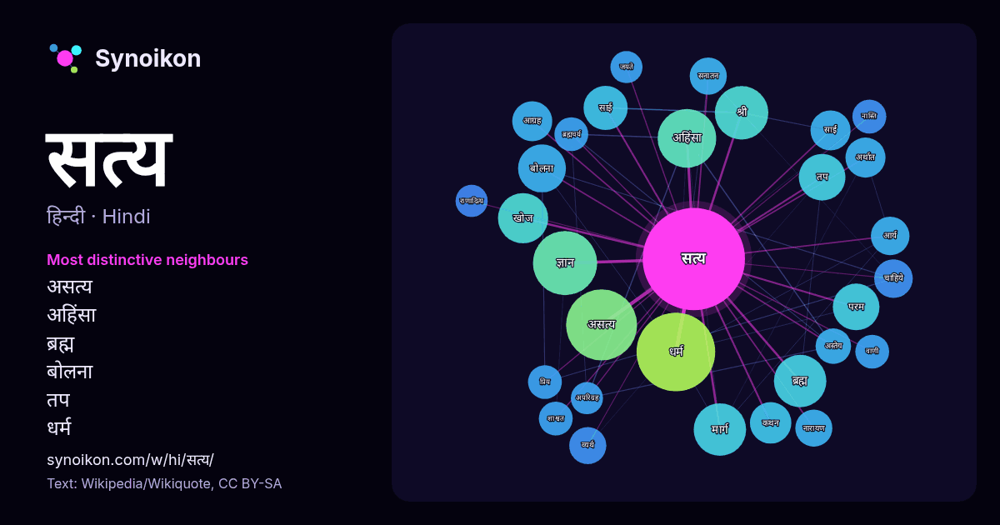

हिन्दी · लोकप्रिय शब्द
सत्य
“truth” · विकिपीडिया, Wikiquote के 1194 प्रयोगों में इसके आसपास मिले शब्द।

सबसे विशिष्ट पड़ोसी
- असत्य 42×
- अहिंसा 28×
- ब्रह्म 20×
- बोलना 20×
- तप 18×
- धर्म 18×
- साई 17×
- परम 16×
- ज्ञान 15×
- साईं 15×
- कथन 13×
- आग्रह 12×
- आर्य 12×
- व्यर्थ 12×
- सनातन 12×
- अस्तेय 12×
- खोज 11×
- नास्ति 11×
- मार्ग 11×
- ब्रह्मचर्य 11×
× = सामान्य विकिपीडिया टेक्स्ट की तुलना में कितने गुना अधिक।
सबसे अधिक आने वाले पड़ोसी
- धर्म 54
- असत्य 44
- ज्ञान 36
- अहिंसा 30
- श्री 25
- अर्थ 24
- ब्रह्म 24
- मार्ग 24
- खोज 22
- केवल 21
- बोलना 20
- भगवान 20
- आधारित 19
- तप 19
- परम 19
- अनुसार 18
- जीवन 18
- नाम 17
- बिना 17
- साई 17
संदर्भ में
- सत्य (truth) के अलग-अलग सन्दर्भों में एवं अलग-अलग सिद्धान्तों में सर्वथा भिन्न-भिन्न अर्थ हैं। सत्य इस संसार में बड़ी शक्ति है. सत्य के बारे में व्यवहारिक Wikipedia snippets · सत्य
- अनंतपुर ज़िले के विभाजान से हुआ था। ज़िले का नाम सत्य साई बाबा पर रखा गया था। पुट्टपर्थी अनंतपुर ज़िला सत्य साई बाबा Raghavendra, V. (26 January 2022). "With Wikipedia snippets · श्री सत्य साई ज़िला
- अत्यधिक प्रभावशाली अध्यात्मिक गुरुओं में से एक थे। सत्य साईं बाबा का बचपन का नाम सत्यनारायण राजू था। सत्य साईं का जन्म आन्ध्र प्रदेश के पुट्टपर्थी गांव में Wikipedia snippets · सत्य साईं बाबा
- किये जा सकें। सामान्यतः सत्य सारणी का उपयोग यह बताने के लिए किया जाता है कि प्रतिज्ञप्तिक व्यंजक सभी वैध निविष्ट मानों के लिए सत्य है जिसे तार्किक वैधता Wikipedia snippets · सत्यता सारणी
- पोद्दार - इंस्पेक्टर पाटिल सुरेश भागवत शान्ता गोखले अर्द्ध सत्य पुरस्कार Archived 2012-10-13 at the वेबैक मशीन एन:IMDB अर्द्ध सत्य इंटरनेट मूवी डेटाबेस पर Wikipedia snippets · अर्द्ध सत्य (1983 फ़िल्म)
- (तेलुगु: ధర్మవరం, अंग्रेज़ी: Dharmavaram) भारत के आन्ध्र प्रदेश राज्य के श्री सत्य साई ज़िले में स्थित एक शहर है। यह चित्रावती नदी के कोने पर बसा हुआ है। धर्मवरम Wikipedia snippets · धर्मवरम, श्री सत्य साई
- सबसे बड़ा सत्य नरेन्द्र कोहली द्वारा रचित व्यंग्य संग्रह है। Wikipedia snippets · सबसे बड़ा सत्य
- सत्य को नारायण (विष्णु) के रूप में पूजना ही सत्यनारायण भगवान की पूजा है। इसका दूसरा अर्थ यह है कि संसार में एकमात्र भगवान नारायण ही सत्य हैं, बाकी सब माया Wikipedia snippets · सत्य नारायण व्रत कथा
और शब्द
- इतिहास
- ईश्वर
- कार्य
- कुत्ता
- गर्मी
- गाना
- घंटी
- घड़ी
- घोड़ा
- चाय
- चित्रकला
- छाया
- जंगल
- जलवायु
- जीवन
- तूफ़ान
- दर्पण
- द्वीप
- नक्षत्र
- नमक
- परिवार
- पहाड़
- पानी
- पैसा
- प्रकृति
- बगीचा
- बिल्ली
- भाषा
- भोजन
- माता
- मानचित्र
- मृत्यु
- मौन
- रेगिस्तान
- रेलगाड़ी
- रोटी
- वर्षा
- विज्ञान
- शक्ति
- शरद
- शहद
- शहर
- सड़क
- समय
- सर्दी
- सेतु
- स्वर्ण
- स्वास्थ्य
- हृदय
2026-10-09 को डिफ़ॉल्ट सेटिंग्स (±5 शब्द, मध्यम कॉर्पस) के साथ पहले से गणना की गई। इंटरैक्टिव मानचित्र इसे लाइव डेटा से ताज़ा कर सकता है।
मशीन-अनूदित इंटरफ़ेस; सुधारों का स्वागत है।